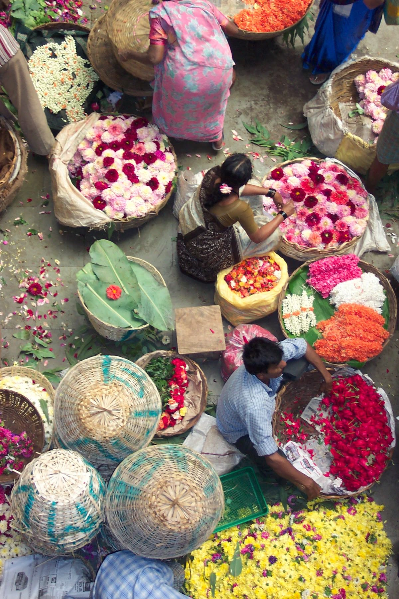
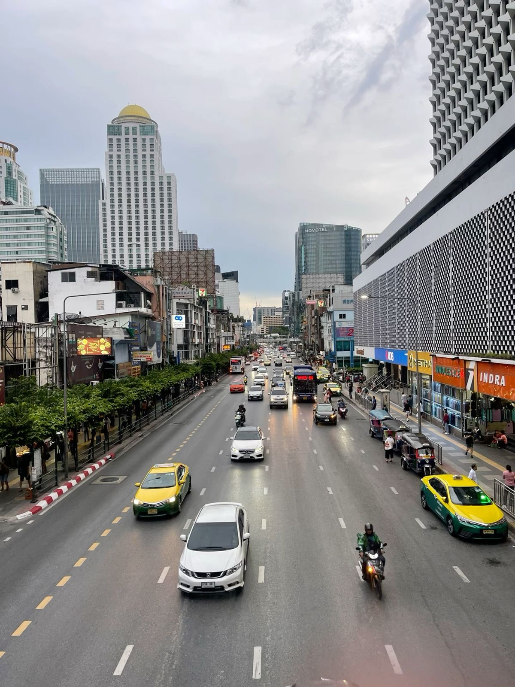
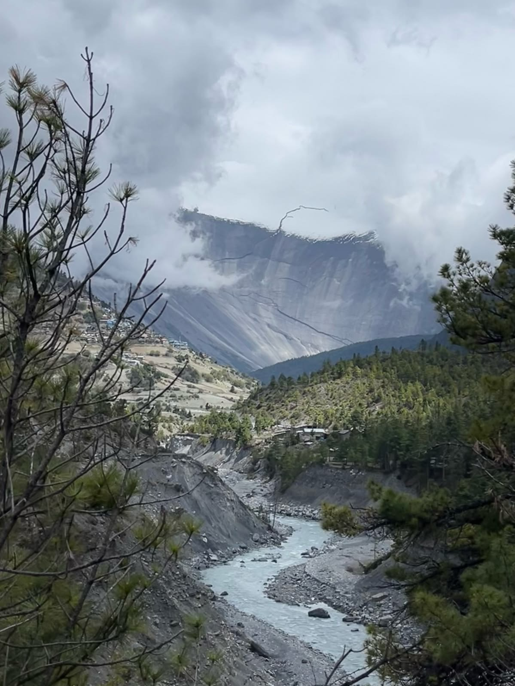
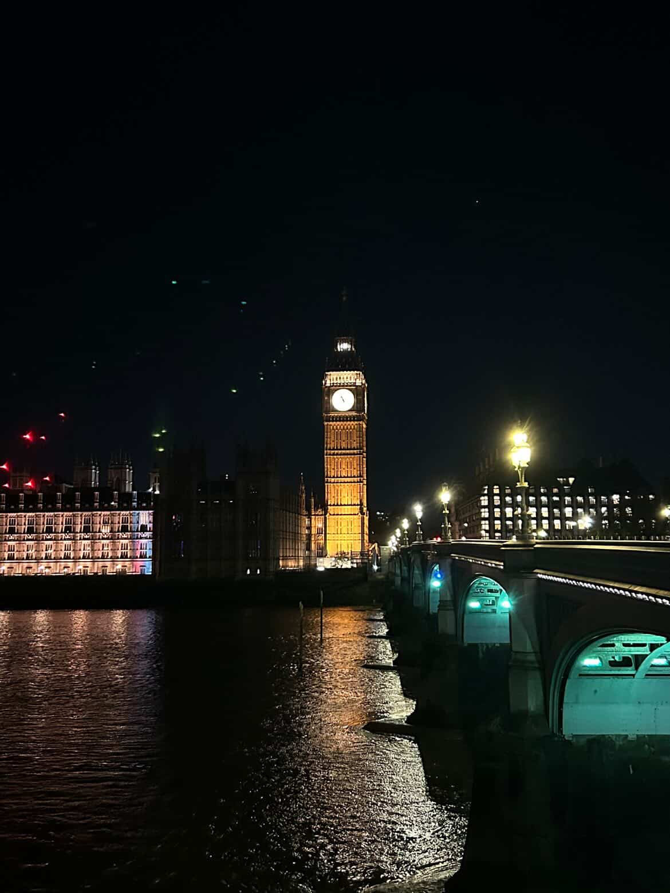

✈️ My Travel Journal ✈️
A collection of my favourite adventures, beautiful places, and unforgettable memories. 🌸
🇮🇳 My Trip to India
April 2025

India was full of colour, culture, and history. Visiting the Taj Mahal was something I had always dreamed about, and seeing it in person was even more beautiful than I imagined. Every street had something exciting to discover, from local markets to incredible architecture.
One of my favourite memories was watching the sunrise while taking photos. It was an unforgettable experience and one of my favourite trips so far.
🇹🇭 Exploring Thailand
January 2026

Thailand had such a peaceful and relaxing atmosphere. I enjoyed visiting beautiful temples, exploring local markets, and watching the sunset beside the river. Everywhere I looked was colourful and full of life.
The delicious food, friendly people, and beautiful scenery made this trip one I'll always remember.
🏔️ A Peaceful Escape to Manang
October 2025

Manang is one of the calmest and most beautiful places I've ever visited. Surrounded by mountains and fresh air, it felt like time slowed down. Every viewpoint looked like a postcard.
The snowy peaks, quiet villages, and peaceful atmosphere made it one of my favourite destinations in Nepal.
🇬🇧 Visiting the United Kingdom
July 2025

London was exciting from the moment I arrived. I enjoyed exploring famous landmarks, walking through the streets, and experiencing a completely different culture. Every building had its own history and charm.
Taking photos at night with all the city lights shining was definitely one of the highlights of my trip.